화공기사(구) (2016-05-08 기출문제)
1과목: 화공열역학
1. 순환법칙
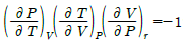
에서 얻을 수 있는 최종식은? (단, β는 부피 팽창률(Volume expansivity), k는 등온압축률(Isothermal compressibility)이다.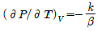
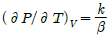
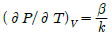
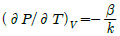
(정답률: 59%)

2. 그림과 같이 상태 A로부터 상태 C로 변화하는데 A → B → C의 경로로 변하였다. 경로 B → C과정에 해당하는 것은?
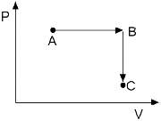
- 등온과정
- 정압과정
- 정용과정
- 단열과정
(정답률: 77%)
3. 온도의 함수로 순수물질의 증기압을 계산하는 다음 식의 이름은? (단, P, T는 각각 온도와 압력을 타 내며, A, B, C는 순수물질 고유상수이다.)
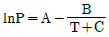
- 돌턴(Dalton)식
- 뉴턴(Newton)식
- 라울(Raoult)식
- 안토인(Antoine)식
(정답률: 71%)
4. 다음과 같은 반응이 11⑤K에서 일어나며, 반응 평형 상수 K는 1.0이다. 초기에 1몰의 일산화탄소와 2몰의 물로 반응이 진행된다면 최종 반응좌표(몰)은얼마인가? (단, 혼합물은 이상기체로 본다.)
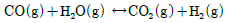
- 0.333
- 0.500
- 0.667
- 0.700
(정답률: 62%)
5. 10atm, 260℃의 과열증기(엔트로피 : 1.66kcal/kgㆍK)가 단열가역적으로 2atm 까지 팽창한다면 수증기의 질량 %는 얼마인가? (단, 2atm일 때 포화증기와 포화액체의 엔트로피는 각각 1.70, 0.36kcal/kgㆍK이다.)
- 97
- 94
- 89.5
- 88.7
(정답률: 34%)
6. 실제기체(real gas)가 이상기체와 가장 가까워질 경우의 상태는?
- 고압, 저온
- 저압, 고온
- 고압, 고온
- 저압, 저온
(정답률: 75%)
7. 이상기체를 등온 하에서 압력을 증가시키면 엔탈피는?
- 증가한다.
- 감소한다.
- 일정하다.
- 초기에 증가하다 점차로 감소한다.
(정답률: 53%)
8. 500K와 10bar의 조건에 있는 메탄가스가 1bar가 될 때까지 가역단열팽창 된다. 이 조건에서 메탄이 이상 기체라고 가정하면 마지막의 온도 T2를 초기온도 T1으로 옳게 나타낸 것은?
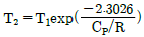
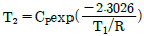
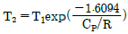
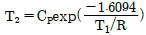
(정답률: 62%)
9. 어떤 화학반응에 대한 △S°는 △ H°=△G°인 온도에서 어떤 값을 갖겠는가? (단, △S° : 표준엔트로피 변화, △H° : 표준 엔탈피 변화, △ G° : 표준 깁스에너지 변화, T : 전대온도 이다.)
- △ S° ＞ 0
- △ S° ＜ 0
- △ S° = 0
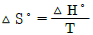
(정답률: 62%)
10. 액체의 증발잠열을 계산하는 식과 관계없는 식은?
- Clapeyron식
- Watson correlation식
- Riedel식
- Gibbs-Duhem식
(정답률: 56%)
11. 압축비 4.5인 오토 사이클(Otto cycle)에 있어서 압축비가 7.5로 되었다고 하면 열효율은 몇 배가 되겠는가? (단, 작동유체는 이상기체이며, 열용량의 비
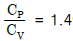
이다.)- 1.22
- 1.96
- 2.86
- 3.31
(정답률: 55%)
12. 다음 중 열역학 제2법칙의 수학적인 표현으로 올바른 것은?
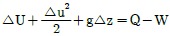
- ΔStotal≥ 0
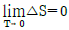
- dU=dQ-dW
(정답률: 64%)
13. 반응의 평형상수 K에 관한 내용 중 틀린 것은? (단, ai, ui는 각각 i성분의 활동도와 양론수이며, △G0 준 깁스(Gibbs)자유에너지 변화이다.)
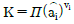
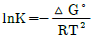
- K는 온도에 의존하는 함수이다.
- K는 무차원이다.
(정답률: 68%)
14. 순수한 성분이 액체에서 기체로 변화하는 상의 전이에 대한 설명 중 옳지 않은 것은?
- 1몰당 깁스(Gibbs) 자유에너지 G는 불연속이다.
- 1몰당 엔트로피 S는 불연속이다.
- 1몰당 부피 V는 불연속이다.
- 액체는 일정 온도에서의 감압 또는 일정 압력에서의 가열에 의해 기체로 상 전이가 일어난다.
(정답률: 50%)
15. PVn=c일경우 폴리트로픽 지수 n의 값에 따라 변화하는 과정으로 틀린 것은? (단, c는 상수이고,
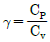
이다.)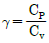
- n = 0, P = c, 등압변화
- n = 1, PV = c, 등온변화
 , 등압변화
, 등압변화- n = ∞, V = c, 정용변화
(정답률: 73%)
16. 다음 등온선 그래프에서 빗금 친 부분의 면적은 무엇을 나타내는가?(참고, 세로축이 (aV/aT)p 입니다)
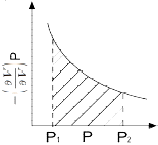
- Ω
- W
- △S
- △H
(정답률: 53%)
17. 100℃에서 물의 엔트로피 값은 0.3kcal/kgㆍK이다. 증발열이 539.1kcal/kg이라면 100℃에서의 수증기의 엔트로피 값은 약 몇 kcal/kgㆍK인가?
- 5.69
- 2.85
- 1.74
- 0.87
(정답률: 58%)
18. 상평형에서 계의 성질이 최대가 되는 것은?
- 엔탈피
- 엔트로피
- 내부 에너지
- 깁스(Gibbs) 자유 에너지
(정답률: 56%)
19. 단일 상계에서 열역학적 특성 값들의 관계에서 틀린것은?
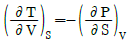
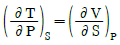
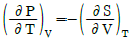
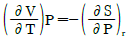
(정답률: 67%)
20. 주어진 온도와 압력에서 화학반응의 평형조건은?
- △S = 0
- △A = 0
- △H = 0
- △G = 0
(정답률: 72%)
2과목: 단위조작 및 화학공업양론
21. 30℃, 750mmHg에서 percentage humidity(비교습도%H)는 20%이고, 30℃에서 포화증기압은 31.8mmHg이다. 공기 중의 실제 증기압은?
- 6.58mmHg
- 7.48mmHg
- 8.38mmHg
- 9.29mmHg
(정답률: 50%)
22. 다음 중 습구온도계 하단부의 구를 젖은 솜으로 싸는 이유로서 가장 거리가 먼 것은?
- 물을 공기 중으로 기화시키기 위하여
- 주위 공기의 건조 상태를 예측하기 위하여
- 잠열이 공기온도에 미치는 영향을 예측하기 위하여
- 공기건조도가 기화속도에 무관하게 됨을 예측하기 위하여
(정답률: 51%)
23. CO2 25vol%와 NH375vol%의 기체 혼합물 중 NH3의 일부가 산에 흡수되어 제거된다. 이 흡수탑을 떠나는 기체가 37.5vol%의 NH3을 가질 때 처음에 들어있던 NH3부피의 몇 %가 제거 되었는가? (단, CO2의 양은 변하지 않으며 산 용액은 증발하지 않는 다고 가정한다.).
- 15%
- 20%
- 62.5%
- 80%
(정답률: 46%)
24. 포도당(C6H12O6) 4.5g이 녹아 있는 용액 1L와 소금물을 반투막을 사이에 두고 방치해 두었더니 두 용액의 농도 변화가 일어나지 않았다. 이 농도에서 소금은 완전히 전리한다고 보고 1L 중에는 몇 g의 소금이 녹아 있는가?
- 0.0731g
- 0.146g
- 0.731g
- 1.462g
(정답률: 31%)
25. 10mol의 N2와 32 mol의 H2를 515℃, 300 atm에서 반응시킨 결과 평형에서 전체 가스는 38 mol이 되었다. 생성된 NH3의 몰수는?
- 1.5 mol
- 2 mol
- 4 mol
- 6.5 mol
(정답률: 48%)
26. 시량변수와 시강변수에 대한 설명으로 옳은 것은?
- 시량변수에는 체적, 온도, 비체적이 있다.
- 시강변수에는 온도, 질량, 밀도가 있다.
- 계의 크기에 무관한 변수가 시강변수이다.
- 시강변수는 계의 상태를 규정할 수 없다.
(정답률: 62%)
27. 다음 단위환산 관계 중 틀린 것은?
- 1.0g/cm3=1000kg/m3
- 0.2386 J = 0.⑤7 cal
- 0.4536 kgf = 9.80665 N
- 1.013 bar = 101.3 kPa
(정답률: 62%)
28. 몰 증발잠열을 구할 수 있는 방법 중 2가지 물질의 증기압을 동일 온도에서 비교하여 대수좌표에 나타낸 것은?
- Duhring 도표
- Othmer 도표
- Cox 선도
- Watson 도표
(정답률: 39%)
29. 10ppm SO2을 %로 나타내면?
- 0.0001%
- 0.001%
- 0.01%
- 0.1%
(정답률: 67%)
30. 그림과 같은 순환조작에서 A, B, C, D, E의 각 흐름의 양을 기호로 나타내었다. 이들의 관계 중 옳은 것은? (단, 이 조작은 정상상태에서 진행되고 있다.)
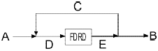
- A = B
- A + C = D + B
- D = E + C
- B = A = C
(정답률: 54%)
31. 70℃, 1atm에서 에탄올과 메탄올의 혼합물이 액상과 기상의 평형을 이루고 있을 때 액상의 메탄올의 몰분율은? (단, 이 혼합물은 이상용액으로 가정하며, 70℃에서 순수한 에탄올과 메탄올의 증기압은 각각 543mmHg, 857mmHg이다.
- 0.12
- 0.31
- 0.69
- 0.75
(정답률: 53%)
32. 젖은 고체 10kg을 완전히 건조하였더니 9.2kg이 되었다. 처음 재료의 수분은 몇 %인가?
- 0.08%
- 0.8%
- 8%
- 10%
(정답률: 58%)
33. 기체 흡수에 관한 설명으로 옳지 않은 것은?
- 기체 속도가 일정하고 액 유속이 줄어들면 조작선의 기울기는 감소한다.
- 액/기(L/V)비가 작으면 조작선과 평형선의 거리가 줄어서 흡수탑의 길이가 길어진다.
- 일반적으로 경제적인 조업을 위해서는 조작선과 평형선이 대략 평행이 되어야 한다.
- 항류 흡수탑의 경우에는 한계 기액비가 흡수탑의 경제성에 별로 영향을 미치지 않는다.
(정답률: 51%)
34. 다음 중 기계적 분리조작과 가장 거리가 먼 것은?
- 여과
- 침강
- 집진
- 분쇄
(정답률: 49%)
35. 다음 중 순수한 물 20℃의 점도를 가장 옳게 나타낸 것은?
- 1g/cmㆍS
- 1cP
- 1Paㆍs
- 1kg/mㆍs
(정답률: 58%)
36. 항류 열교환기에서 온도 300K의 냉각수 30kg/s을 사용하여 더운 물 20kg/s을 370K에서 340K로 연속 냉각시키려고 한다. 총괄 전열계수를 2.5kW/m2ㆍK로 가정하였을 때 전열 면적은 약 몇 m2인가?
- 22.4
- 34.1
- 41.3
- 50.2
(정답률: 33%)
37. 열전달과 온도 관계를 표시한 가장 기본 되는 법칙은?
- 뉴톤의 법칙
- 푸리어의 법칙
- 픽의 법칙
- 후크의 법칙
(정답률: 56%)
38. Fanning 마찰계수를 f라 하고 손실수두를 Hf라 할때 Hf와 f의 관계를 나타내는 식은?
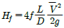
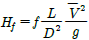
- HF=16/f
- Hf=16f/NRe
(정답률: 63%)
39. 다음의 확산식 중 단일 성분 확산과 관계가 있는 식은? (단, NA= 물질이동속도, Dm : 확산계수, B : 확산층 두께, A : 면적, yi, y : 상경계 및 기상의 용질몰 분률)
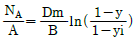
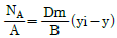
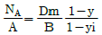
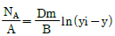
(정답률: 56%)
40. 2개의 관을 연결할 때 사용되는 관 부속품이 아닌것은?
- 유니온(union)
- 니플(nipple)
- 소켓(socket)
- 플러그(plug)
(정답률: 50%)
3과목: 공정제어
41. 다음 중 캐스케이드 제어를 적용하기에 가장 적합한 동특성을 가진 경우는?
- 부제어루프 공정 :
 , 주제어루프 공정 :
, 주제어루프 공정 : 
- 부제어루프 공정 :
 , 주제어루프 공정 :
, 주제어루프 공정 : 
- 부제어루프 공정 :
 , 주제어루프 공정 :
, 주제어루프 공정 : 
- 부제어루프 공정 :
 , 주제어루프 공정 :
, 주제어루프 공정 : 
(정답률: 56%)
42. 다음 공정에 비례제어기(Kc = 3)가 연결되어 있고 초기 정상상태에서 설정값이 5만큼 계단변화할 때 잔류편차는?
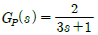
- 0.71
- 1.43
- 3.57
- 4.29
(정답률: 21%)
43. Amplitude ratio가 항상 1인 계의 전달함수는?
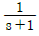
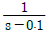
- e-0.2s
- s + 1
(정답률: 45%)
44. Routh의 판별법에서 수열의 최좌열(最左列)이 다음과 같을 때 이 주어진 계의 특성방정식은 양의 근 또는 양의 실수부를 갖는 근이 몇 개있는가?
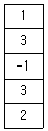
- 0개
- 1개
- 2개
- 3개
(정답률: 56%)
45. 전달함수
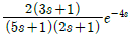
로 표현되는 공정에 단위계단 입력이 들어왔을 때의 응답과 관련한 내용으로 트린 것은? (단, 시간단위는 분이다.)- 출력응답은 최종적으로 6 만큼 변한다.
- 실제 출력변화는 4분 지난 후에 발생한다.
- 역응답(inverse response)을 보이지 않는다.
- 극점값이 실수이므로 진동 응답은 발생하지 않는다.
(정답률: 34%)
46. x1과 x2는 다음의 미분방정식을 만족할 때 x1과 x2에 대하여
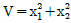
는 시간에 따라 어떻게 되는가?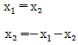
- 감소한다.
- 증가한다.
- 진동한다.
- 초기값에 따라 달라진다.
(정답률: 28%)
47. f(t)=1의 Laplace 변환은?
- s
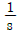
- S2
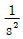
(정답률: 69%)
48. 공정에 대한 수학적 모델의 직접적 용도로 부적절한 것은?
- 공정에 대한 이해의 향상
- 공정 운전의 최적화
- 제어 시스템의 설계와 평가
- 제품 시장의 분석 및 평가
(정답률: 65%)
49. 제어계를 조작하는 방법으로 몇 가지 방법이 있다. 부하(load)에 변화가 들어오고 설정치(set point)를 일정하게 유지하며 화학공장에서 흔히 나타나는 문제는?
- 서어보 문제
- 레귤레이터 문제
- 혼합 문제
- 브라시우스 문제
(정답률: 47%)
50. 정상상태에서의 x와 y의 값을 각각 0, 2라 할 때 함수 f(x, y)=ex+y2-5 을 주어진 정상상태에서 선형화하면?
- x + 4y - 8
- x + 4y - 5
- x + 2y - 8
- x + 2y - 5
(정답률: 37%)
51. 피드포워드제어기에 대한 설명으로 옳은 것은?
- 설정점과 제어변수간의 오차를 측정하여 제어기의 입력 정보로 사용한다.
- 주로 PID 알고리즘을 사용한다.
- 보상하고자 하는 외란을 측정할 수 있어야 한다.
- 피드백제어기와 함께 사용하면 성능저하를 가져온다.
(정답률: 60%)
52. 어떤 이차계의 특성방정식의 두 근이 다음과 같다고 할 때 단위계단입력에 대하여 감쇠하는 진동 응답을 보이는 공정은?
- 1+3 i, 1-3 i
- -1, -2
- 2, 4
- -1+2 i, -1-2 i
(정답률: 49%)
53. 선형제어계의 안전성을 판별하기 위한 특성방정식을 옳게 나타낸 것은?
- 1 + 닫힌 루프 전달함수 = 0
- 1 - 닫힌 루프 전달함수 = 0
- 1 + 열린 루프 전달함수 = 0
- 1 - 열린 루프 전달함수 = 0
(정답률: 42%)
54. 다음 블록선도에서
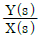
를 구하면?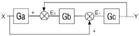
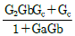
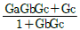
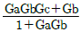
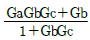
(정답률: 58%)
55. 전달함수가
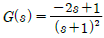
인 공정의 단위계단 응답의 모양으로 옳은 것은?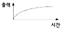
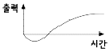
(정답률: 53%)
56. 로 표현되는 공정 와 A와 로 표현되는 공정 B가 있을 때 같은 크기의 계단입력이 가해졌을 경우 옳은 것은?(오류 신고가 접수된 문제입니다. 반드시 정답과 해설을 확인하시기 바랍니다.)
- 공정 A가 더 빠르게 정상상태에 도달한다.
- 공정 B가 더 진동이 심한 응답을 보인다.
- 공정 A가 더 진동이 심한 응답을 보인다.
- 공정 B가 더 큰 최종 응답 변화값을 가진다.
(정답률: 34%)
57. 인 공정에 인 PI 제어기가 연결되었을 때, 폐루프가 안정하기 위한 Kc의 최대치와 임계주파수(critical frequency 또는 phase crossover frequency) 값은?
- (4.34, 1.33 (radian/time))
- (0.23, 1.33 (radian/time))
- (4.34, 2.68 (radian/time))
- (0.23, 2.68 (radian/time))
(정답률: 32%)
58. 앞먹임 제어에서 사용되는 측정 변수는?
- 공정 상태 변수
- 출력 변수
- 입력 조작 변수
- 측정 가능한 외란
(정답률: 64%)
59. 어떤 계의 단위계단 응답이 일 경우 이 계의 단위충격 응답(impulse response)은?
(정답률: 47%)
60. 공정제어(Process Control)의 범주에 들지 않는 것은?
- 전력량을 조절하여 가열로의 온도를 원하는 온도로 유지시킨다.
- 폐수처리장의 미생물의 량을 조절함으로써 유출수의 독성을 격감시킨다.
- 증류탑(Distillation Column)의 탑상농도(Top Concentration)를 원하는 값으로 유지시키기 위하여 무엇을 조절할 것인가를 결정한다.
- 열효율을 극대화시키기 위해 열교환기의 배치를 다시 한다.)
(정답률: 56%)
4과목: 공업화학
61. 인산 제조법 중 건식법에 대한 설명으로 틀린 것은?
- 전기로법과 용광로법이 있다.
- 철과 알루미늄 함량이 많은 저품위의 광석도 사용할 수 있다.
- 인의 기화와 산화를 별도로 진행시킬 수 있다.
- 철, 알루미늄, 칼슘의 일부가 인산 중에 함유되어 있어 순도가 낮다.
(정답률: 55%)
62. 폴리탄산에스테르 결합을 갖는 열가소성 수지로 비스페놀 A로부터 얻어지며 투명하고 자기소화성을 가지고 있으며, 뛰어난 내충격성, 내한성, 전기적 성질을 균형 있게 갖추고 있는 엔지니어링 플라스틱은?
- 폴리프로필렌
- 폴리아미드
- 폴리이소프렌
- 폴리카보네이트
(정답률: 61%)
63. 페놀의 공업적 제조 방법 중에서 페놀과 부산물로 아세톤이 생성되는 합성법은?
- Raschig법
- Cumene법
- Dow법
- Toluene법
(정답률: 69%)
64. 다음 중 석유의 접촉 분해시 일어나는 반응으로 가장 거리가 먼 것은?
- 축합
- 탈수소
- 고리화
- 이성질화
(정답률: 46%)
65. 반도체의 일반적인 성질에 대한 설명 중 틀린 것은?
- 4족 원소가운데 에너지 갭의 크기순서는 탄소 ＞ 실리콘 ＞ 게르마늄 이다.
- 에너지 갭의 크기가 클수록 전기전도도는 감소한다.
- 진성 반도체의 전기전도도는 온도가 증가함에 따라 감소한다.
- 절대온도 0K에서 전자가 존재하는 최상위 에너지 준위를 페르미 준위라고 한다.
(정답률: 51%)
66. 격막법에서 사용하는 식염수의 농도는 30g/100mL이다. 분해율은 50% 일 때 전체 공정을 통한 염의 손실률이 5%이면 몇 m3의 식염수를 사용하여 NaOH 1ton을 생산할 수 있는가? (단, NaCl의 분자량은 58.5이고, NaOH 분자량은 40이다.)(오류 신고가 접수된 문제입니다. 반드시 정답과 해설을 확인하시기 바랍니다.)
- 10.26
- 20.26
- 30.26
- 40.26
(정답률: 27%)
67. 가성소오다를 제조할 때 격막식 전해조에서 양극재료로 주로 사용되는 것은?
- 수은
- 철
- 흑연
- 구리
(정답률: 70%)
68. 칼륨 광물 실비아니트(Sylvinite) 중 KCl의 함량은? (단, 원자량은 K : 39.1, Na : 23, Cl : 35.5이다.)
- 36.⑤%
- 46.⑤%
- 56.⑤%
- 66.⑤%
(정답률: 53%)
69. 황산제조방법 중 연실법에 있어서 장치의 능률을 높이고 경제적으로 조업하기 위하여 개량된 방법(또는 설비)인 것은?
- 소량응축법
- Pertersen Tower법
- Reynold법
- Monsanto법
(정답률: 61%)
70. 다음 중 무수 염산의 제조법이 아닌 것은?
- 직접 합성법
- 액중 연소법
- 농염산의 증류법
- 건조 흡탈착법
(정답률: 51%)
71. 염안소오다법에 의한 Na2CO3제조시 생성되는 부산물은?
- NH4CI
- NaCl
- CaO
- CaCI2
(정답률: 36%)
72. 다음 중 슬폰산화가 되기 가장 쉬운 것은?
(정답률: 59%)
73. 다음 중 유리기(free radical) 연쇄반응으로 일어나는 반응은?
- CH2=CH2+H2→CH3CH3
- CH4+CI2→CH3CI+CHI
- CH2=CH2+Br2→CH2Br-CH2Br
(정답률: 36%)
74. 수평균 분자량이 100000인 어떤 고분자 시료 1g과 수평균 분자량이 200000인 같은 고분자 시료 2g을 서로 섞으면 혼합시료의 수평균 분자량은?
- 0.5×105
- 0.667×5
- 1.5×5
- 1.667×5
(정답률: 51%)
75. 다음 중 직접적으로 전지의 성능을 나타내는 것이 아닌 것은?
- 에너지 밀도
- 충방전 횟수
- 자기방전율
- 전해질
(정답률: 67%)
76. 같은 몰수의 두 종류의 단량체 사이에서 이루어지는 선형 축합중합체의 경우 전환율과 수평규중합도 사이에는 Carothers식에 의한 관계를 가정할 수 있다. 전 환율이 99%인 경우, 얻어지는 축합고분자의 수평균 중합도는?
- 10
- 100
- 1000
- 10000
(정답률: 42%)
77. 암모니아 산화에 의한 질산제조 공정에서 사용되는 촉매에 대한 설명으로 틀린 것은?
- 촉매로 백금(Pt)에 Rh이나 Pd를 첨가하여 만든 백금계 촉매가 일반적으로 사용된다.
- 촉매는 단위 중량에 대한 표면적이 큰 것이 유리하다.
- 촉매형상은 직경 0.2cm 이상의 선으로 망을 떠서 사용한다.
- Rh은 가격이 비싸지만 강도, 촉매활성, 촉매손실을 개선하는데 효과가 있다.
(정답률: 57%)
78. 다음 중 syndiotactic-폴리스타이렌의 합성에 관여하는 촉매로 가장 적합한 것은?
- 메탈로센 촉매
- 메탈올사이드 촉매
- 린들러 촉매
- 벤조일퍼록사이드
(정답률: 41%)
79. 아세틸렌과 작용하여 염화비닐을 생성하는 물질은?
- CI2
- NaCl
- NaClO
- HCl
(정답률: 69%)
80. 유지의 분석시험 값으로 성분 지방산의 평균분자량을 알 수 있는 것은?
- Acid value(산값)
- Rhodan value(로단값)
- Acetyl value(아세틸값)
- Saponification value(비누화값)
(정답률: 63%)
5과목: 반응공학
81. 체적 0.212m3의 로켓엔진에서 수소가 6kmol/s의 속도로 연소된다. 이 때 수소의 반응속도는 약 몇kmol/m3ㆍs인가?
- 18.0
- 28.3
- 38.7
- 49.0
(정답률: 59%)
82. 그림은 단열 조작에서 에너지수지식의 도식적 표현이다. 발열반응의 경우 불활성 물질을 증가시켰을 때 단열 조작선은 어느 방향으로 이동하겠는가? (단, 실선은 불활성 물질이 없는 경우를 나타낸다.)
- ①
- ②
- ③
- ④
(정답률: 48%)
83. 플러그 흐름반응기(plug flow reactor)에서 반응이 진행된다. 그림의 빗금 친 부분은 무엇을 의미하는가? (단, 는 반응 A → R에 대해 이 반응기에서 R의 순간수율(instantaneous fractional yield)이다.)
- 총괄수율
- 반응해서 없어진 반응물의 몰수
- 생성되는 R의 최종농도
- 그 순간의 반응물의 농도
(정답률: 50%)
84. 액상 비가역 2차 반응 A → B를 [그림]과 같이 순환비 R의 환류식 플러그 흐름 반응기에서 연속적으로 진행 시키고자 한다. 이때 반응기 입구에서의 A의 농도를 옳게 표현한 식은?
- CAiRCAf+CAo
- CAf=CAf+RCA0
(정답률: 49%)
85. 가열적 소반응(기초반응) A+B R+S 에서 rR=k1C1CB이고 -rR=k2CRCS 때 다음 중 이 반응의 평형상수 Kc에 해당하는 것은?
- k1k2
(정답률: 49%)
86. 반감기가 50시간인 방사능액체를 10L/h의 속도를 유지하며 직렬로 연결된 두 개의 혼합탱크(각각 V = 4000L)에 통과시켜 처리한다. 이와 같이 처리시킬 때 방사능이 얼마나 감소하겠는가?
- 93.67%
- 95.67%
- 97.67%
- 99.67%
(정답률: 31%)
87. 연속흐름 반응기에서 물질수지식으로 옳은 것은?
- 입류량 = 출류량 - 소멸량 + 축적량
- 입류량 = 출류량 - 소멸량 - 축적량
- 입류량 = 출류량 + 소멸량 + 축적량
- 입류량 = 출류량 + 소멸량 - 축적량
(정답률: 48%)
88. 그림 A, B, C는 mixed flow reactor와 plug flow reactor을 각각 다르게 연결한 것이다. 1차 이상의 반응에서 (A)의 생성물의 양을 X1로 하고 (B)의 생성물의 양을 X2로 하며, (C)의 생성물의 양을 X3로 하였을 때 옳은 것은?
- X1 ＜ X3 ＜ X2
- X2 ＜ X1 ＜ X3
- X1 ＜ X2 ＜ X3
- X3 ＜ X1 ＜ X2
(정답률: 52%)
89. 반응전화율을 온도에 대하여 나타낸 직교좌표에서 반응기에 열을 가하면 기울기는 단열과정에서보다 어떻게 되는가?
- 증가한다.
- 감소한다.
- 일정하다.
- 반응열의 크기에 따라 증가 또는 감소한다.
(정답률: 32%)
90. 0차 반응의 반응물 농도와 시간과의 관계를 옳게 나타낸 것은?
(정답률: 50%)
91. 불균질(heterogeneous) 반응속도에 대한 설명으로 가장 거리가 먼 것은?
- 불균질 반응에서 일반적으로 반응속도식은 화학반응항에 물질 이동항이 포함된다.
- 어떤 단계가 비선형성을 띠며 이를 회피하지 말고 총괄속도식에 적용하여 문제를 해결해야 한다.
- 여러 과정의 속도를 나타내는 단위가 서로 같으면 총괄 속도식을 유도하기 편리하다.
- 총괄 속도식에는 중간체의 농도항이 제거되어야 한다.
(정답률: 50%)
92. 이상적 반응기 중 완전교반흐름 반응기에 대한 설명으로 틀린 것은?
- 반응기 입구와 출구의 몰 속도가 같다.
- 정상상태 흐름반응기이다.
- 축방향의 농도 구배가 없다.
- 반응기 내의 온도 구배가 없다.
(정답률: 41%)
93. 크기가 다른 2개의 혼합흐름반응기를 사용하여 1차 반응에 의해서 제품을 생산하려 한다. 다음 중 옳은 것은?
- 혼합흐름반응기의 순서는 전환율에 아무런 영향도 주지 않는다.
- 혼합속도가 느린 반응기를 먼저 설치해야 전환율이 크다.
- 작은 혼합흐름반응기를 먼저 설치해야 전환율이 크다.
- 큰 혼합흐름반응기를 먼저 설치해야 전환율이 크다.
(정답률: 45%)
94. 부피가 일정한 회분식반응기에서 반응혼합물 A기체의 최초 압력을 478mmHg로 할 경우에 반감기가 80s 이었다고 한다. 만일 이 A기체의 반응 혼합물에 최초 압력을 315mmHg로 하였을 때 반감기가 120s로 되었다면 반응의 차수는 몇 차 반응으로 예상할 수 있는가? (단, 반응물은 초기 조성이 같고, 비가역 반응이 일어난다.)
- 1차 반응
- 2차 반응
- 3차 반응
- 4차 반응
(정답률: 51%)
95. 체적이 일정한 회분식 반응기에서 다음과 같은 기체 반응이 일어난다. 초기의 전압과 분압을 각각 P0, PA0, 나중의 전압을 P라 할 때 분압 PA을 표시하는 식은? (단, 초기에 A, B는 양론비대로 존재하고 R은 없다.)
- PA=PA0-[a/(r+a+b)](P-P0)
- PA=PA0-[a/(r-a-b)](P-P0)
- PA=PA0+[a/(r-a-b)](P-P0)
- PA=PA0+[a/(r++)](P-P0)
(정답률: 46%)
96. 촉매 반응에서 기공확산 저항에 대한 설명 중 옳은 것은?
- 유효인자(effectiveness factor)가 작을수록 실제 반응속도가 작아진다.
- 고체촉매 반응에서 기공확산 저항만이 율속단계가 될 수 있다.
- 기공확산 저항이 클수록 실제 반응속도는 증가된다.
- 기공확산 저항은 항상 고체입자의 형태에는 무관하다.
(정답률: 43%)
97. 양론식 A + 3B → 2R + S가 2차 반응 -rA=K1CAC13일 때 rA, rB와 rR의 관계식으로 옳은 것은?(오류 신고가 접수된 문제입니다. 반드시 정답과 해설을 확인하시기 바랍니다.)
- rA=rB=rR
- -rA=-rB=rR
- -rA=(1/3)rB=(1/2)rR
- -rA=-3rB=2rR
(정답률: 53%)
98. 부피가 일정한 회분식(batch) 반응기에서 다음의 기초반응(elementary reaction)이 일어난다. 반응속도 상수 k=1.0mol/m3/(sㆍmol), 반응 초기 A의 농도는1.0mol/m3이라면 A의 전화율이 75%일 때까지 걸리는 반응 시간은 얼마인가?
- 1.4s
- 3.0s
- 4.2s
- 6.0s
(정답률: 35%)
99. 다음은 Arrhenius 법칙에 의해 그린 활성화 에너지(Activation energy)에 대한 그래프이다. 이 그래프에 대한 설명으로 옳은 것은?
- 직선 ②보다 ①이 활성화 에너지가 크다.
- 직선 ①보다 ②가 활성화 에너지가 크다.
- 초기에는 직선 ①이 활성화 에너지가 크나 후기에는 ②가 크다.
- 초기에는 직선 ②가 활성화 에너지가 크나 후기에는 ①이 크다.
(정답률: 53%)
100. 다음의 액상 병렬반응을 연속 흐름 반응기에서 진행 시키고자 한다. 이때 같은 입류조건에 A의 전환율이 모두 0.9가 되도록 반응기를 설계한다면 어느 반응기를 사용하는 것이 R로의 전환율을 가장 크게 해주겠는가? (단 rR=20CA이고 이다.)
- 플러그 흐름 반응기
- 혼합 흐름 반응기
- 환류식 플러그 흐름 반응기
- 다단식 혼합 흐름 반응기
(정답률: 40%)